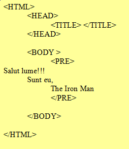
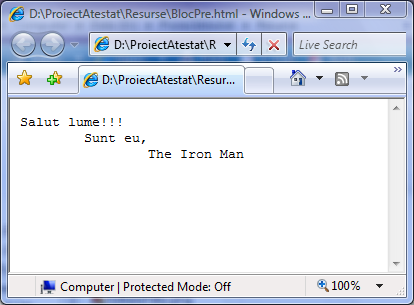

Blocuri de text preformatat
Am vazut ca, utilizand eticheta BR fortam doar trecerea la rand nou. Pentru a putea
face "vizibile" efectele tastelor Space, Tab si Enter este necesar ca blocul de text sa fie
declarat preformatat cu ajutorul etichetelor PRE si /PRE. Exemplul de mai jos ilustreaza
modul in care este afisat un bloc de text preformatat:


Codul sursa Afisare pagina web
Inapoi la Blocuri de text